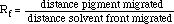

If you did a number of chromatographic separations, each for a different length of time, the pigments would migrate a different distance on each run. However, the migration of each pigment relative to the migration of the solvent would not change. This migration of pigment relative to migration of solvent is expressed as a constant, Rf (Reference front). It can be calculated by using the formula:

|
Look back at the black ink chromatogram, and then calculate the Rf value for green.
|
 Continue to Lab Quiz I.
Continue to Lab Quiz I.